从最少参数表示到 VEQ 平衡求解器
MXH–Chebyshev 的压缩能力、投影残差的边界，以及可继续做的实验。
依据上传的 arXiv:2601.02942v1 与 arXiv:2606.11821v1；46 页，15 幅原图，8 张表。页码均为 PDF 页码。
先读结论：从紧凑表示到投影求解器
这两篇论文的共同价值，是把托卡马克平衡压缩成有物理含义的连续参数表示；它们没有证明，少量参数能够在所有应用中替代高精度平衡求解。1 月论文 A 展示已知平衡的 MXH–Chebyshev 紧凑拟合，并验证一个五参数低阶正问题；6 月论文 B 则给出多种源剖面接口、实际非线性求解和逐点残差诊断。两者应按“表示能力 → 求解条件 → 下游适用性”递进阅读。
A 的“最少参数”是特定边界、样例、误差度量与基函数下的经验结果，没有给出普适下界或最小性证明。B 的毫秒级数字是完成预处理和编译后的单次求解时间，不能直接与完整 CHEASE、EFIT、ECOM 或 DESC 工作流的总时间比较。最关键的数学区分是：
左边意味着残差对有限个测试方向的投影消失；右边才是所有采样点残差消失。B 的边界残差和附录修正实验，正好说明两者不能互相替代。[A：§3–5，PDF pp.5–11；B：§2.5、§5–6、附录 B，PDF pp.8–9、16–24、28–31]
| 阅读问题 | A：2601.02942v1 | B：2606.11821v1 |
|---|---|---|
| 究竟做什么 | 压缩已有平衡；低阶五参数变分求解 | 在同一紧凑表示内求解投影 GS 方程 |
| 最强证据 | 标准与复杂几何的拟合图、剖面与系数衰减 | 三类算例、六路线一致性、精度–成本扫描、逐点残差与受控输运测试 |
| 不能据此断言 | 数学上的全局最小维数；稳定性计算已验证 | 严格分离面解析；自由边界；比其他代码普遍更快或更准 |
| 推荐关注 | 坐标选择、几何归纳偏置、ICP、谱表示 | 变分测试函数、源闭合、残差盲区、端到端误差预算 |
论文信息、材料范围与版本边界
A · What Is the Minimum Number of Parameters Required to Represent Solutions of the Grad-Shafranov Equation?
Huasheng Xie、Yueyan Li。用户文件 2601.02942v1.pdf，13 页，5 幅编号图，无编号表。arXiv v1 提交日期为 2026-01-06；上传 PDF 首页另印 7 January 2026。官方摘要页目前列出期刊信息 Plasma Physics and Controlled Fusion 68 (2026) 085021，DOI：10.1088/1361-6587/ae9591。本报告分析的是用户提供的 v1，不将期刊版本可能的修订混入公式或图号。A 的版本入口。
B · VEQ: a fast parametric Grad–Shafranov solver for fixed-boundary tokamak equilibria with flexible source profiles
Ruohan Zhang、Huasheng Xie、Yueyan Li、Weiqi Meng、Feng Wang、Zhengxiong Wang。用户文件 2606.11821v1.pdf，33 页；arXiv v1 提交于 2026-06-10。正文图 1–9，附录图 B.10；表 1–7 与 B.8。B 的版本入口。当前核对的 arXiv 页面未列期刊发表信息。
已覆盖：A 正文全部章节、附录 A 与参考文献脉络；B 正文全部章节、附录 A（六路线闭合）和附录 B（配点修正），以及全部图注、表注。两篇共 46 页，15 幅图，8 张表。下文页码均指 PDF 页码，本次文件中与印刷页码一致。
补充材料边界：此次官方入口与 PDF 中未发现可另行读取的独立补充 PDF。B 第 26 页说明文章专用 Zhang2026-v1 源码、脚本、配置和数据包在评审阶段通过匿名包提供，拟接收后公开；本次未获得该特定包，未执行数值复现。公开代码仓库已经可以访问，但不将其当前版本当作文章实验快照。没有追读全部参考文献，也没有开展新颖性检索。
文献网页及代码入口核对日期：2026-09-24。实质方法和数值分析均以用户 PDF 为准；网页仅用于发表信息和资源可用性核对。报告新增数学式保留 LaTeX 源码并预渲染，原图来自上传文件的页面渲染；无需联网即可阅读正文、公式和图片。
共同基础：GS 方程与“参数少”的含义
轴对称理想 MHD 平衡可用每弧度极向磁通 描述。压力 和环向场函数 是磁通函数；在 A 正文式 (1)–(2) 与 B 式 (26) 的写法下：
是柱坐标中的位置，单位米； 单位帕； 单位特斯拉·米； 是磁通/弧度； 为真空磁导率。下标 表示对磁通求导。固定边界问题把 LCFS（最外闭合磁面）给定，求其内嵌套磁面与相关剖面；它不同时求外部线圈、真空区或边界运动。
网格方法存储大量点值，参数法存储少量函数系数，但系数个数、积分采样点数、源数据点数、边界数据量与非线性迭代成本是不同东西。已给定的 LCFS 和源函数携带的信息，不能算成“零信息输入”；如果它们不纳入未知量，声称参数少就只针对内部求解自由度。[A：§3.1；B：§3.2、表 4–5]
两篇的径向坐标不能直接混用
A 的高保真拟合常用 ：磁通映射已知，几何小半径函数 需要变化。几何径向坐标则可令小半径尺度为常数，把复杂度移到 。B 使用参数磁面的径向标签 ，不假设它等于输入文件中的 ，而是求单调的 。因此同一个“径向剖面”必须先说明横轴。[A：PDF p.3，式 (4)；B：PDF p.3，§2.1]
轴对称意味着可忽略环向变化，不能把这一压缩效果原样推广到三维仿星器。两文关于 DESC 的讨论提供背景和潜在比较对象，未构成匹配精度、边界和计时条件下的代码性能实验。
论文 A：MXH–Chebyshev 表示如何构成
1. 用角度畸变表达形状，而非直接堆叠位置谐波
这是 A 式 (6)–(8)。 是水平与竖直位移； 是伸长比； 控制倾斜； 主导三角形变； 控制方形度；余弦项支持上下不对称。MXH 将常见形变编码进非线性坐标映射，因此某些 D 形可以由一个角谐波产生，而不必在 的直接 Fourier 展开中逐项逼近。但它仍是单组嵌套闭合磁面表示，“几何灵活”不代表能改变磁拓扑。
A 图 1 · 单个 MXH 系数的形状作用
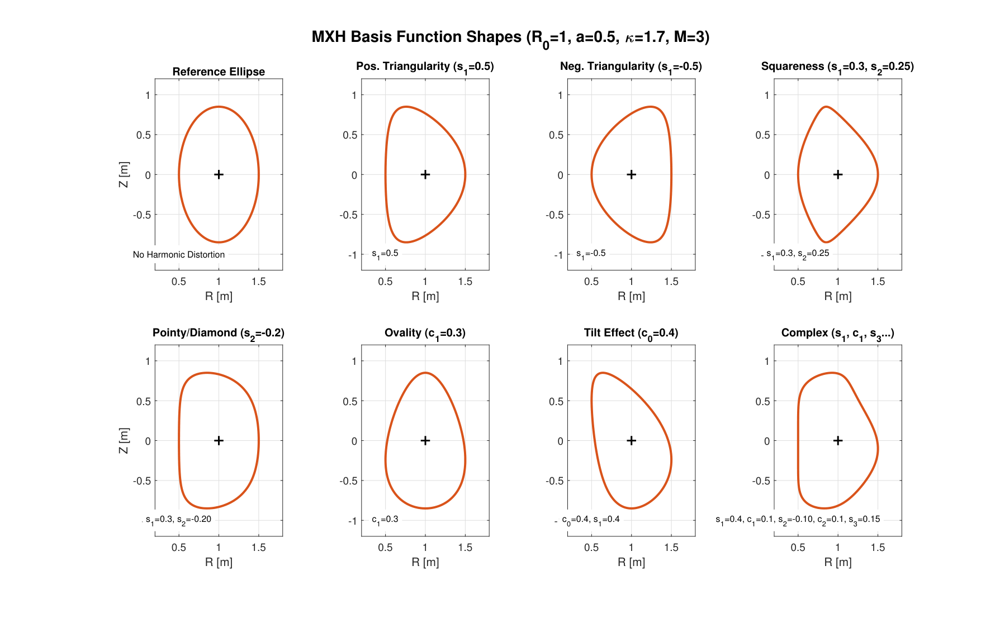
来源：2601.02942v1.pdf · PDF p.4 · 原编号 Figure 1。点击图片查看原分辨率。
横、纵轴是 ，单位米。上排从左到右：参考椭圆、正三角形变、负三角形变、加入 的方形度；下排：负 产生尖角/菱形趋势、 产生上下非对称的卵形、 改变倾斜、多个谐波叠加产生复杂形状。图中固定尺度和参数值用于隔离每项的作用。
图支持“形状参数可解释且紧凑”，没有说明这些任意组合满足 GS 方程、雅可比正定或全域磁面嵌套。图注把三角度写成 ，与只保留 的映射推导不一致；见后面的公式审查。
2. 径向展开同时固定边界并约束轴附近行为
式 (9)–(11) 的关键不是单纯“换一种多项式”。前因子让所有可优化修正都在边界消失；对 展开让此类剖面的轴处一阶径向导数为零。Chebyshev 递推可复用来计算值与导数，避免从离散点再差分。但几何谐波与标量磁通函数的轴正则条件不能未经证明视为完全相同；坐标函数的光滑也不能自动证明物理空间所有高阶量精确。[A：PDF p.5；附录 A，pp.12–13]
A 图 2 · 平滑剖面与陡峭剖面的阶数需求
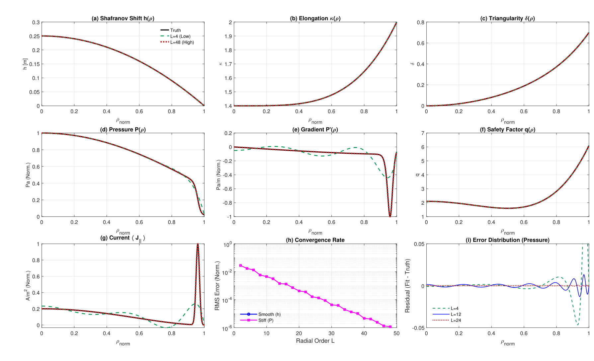
来源：2601.02942v1.pdf · PDF p.6 · 原编号 Figure 2。点击图片查看原分辨率。
(a) 水平位移 ，单位米；(b) 伸长比；(c) 三角度；(d) 归一化压力；(e) 归一化压力梯度；(f) 安全因子；(g) 归一化平行电流。横轴都是归一化径向标签。前三个平滑几何量低阶即贴近真值，而台基梯度和边缘电流尖峰需要明显更高阶。
(h) 横轴为径向阶数，纵轴为归一化 RMS 误差的对数刻度；陡峭压力曲线随阶数快速下降。平滑曲线可能低于绘图下限，不能从图外读出具体精度。(i) 展示压力拟合减真值，比较不同阶数的边缘振荡；阶数提高能减小振荡。
这是给定一维函数的近似实验，不能直接证明非线性平衡求解同样指数收敛。图中梯度标注的物理单位与归一化横轴未完全展开，报告仅保留“归一化”解释，不据此提取绝对台基梯度。
3. 两级问题：正向求解与逆向拟合
Level 1：给定边界与源信息，采用 A 式 (13)–(16) 的低阶函数，通过变分方法求五个未知数：
其中边界伸长与三角度已给定，三角形变的径向形状也预设。五参数的成功建立在这些限制上，不能理解为五个数描述任意输入平衡。[A：PDF p.7，§4.1]
Level 2：先从 CHEASE 已知磁面获得离散几何，再拟合 MXH 参数。初步按固定角度/包围盒拟合，在强形变情况下误差约为百分之一；ICP（迭代最近点）允许匹配点沿曲线重新对应，以欧氏距离改善边界拟合，文中报告约 。随后对径向形状参数作 Chebyshev 拟合，并由连续表示重建磁面、磁通差和谱系数衰减。这解决的是“已有解能否压缩”，不是从源剖面独立求出高阶 GS 解。[A：PDF pp.8–10，§4.2–4.3]
附录 A 的实现价值：它给出逆坐标度量、GS 算子、MXH 一二阶导数和径向递推。以 为例，原式 (A.22)–(A.23) 为：
这里 是对 求导， 对 求导；混淆它们会漏掉链式法则系数。解析求导是可复用实现要点，但原附录 GS 源项存在符号疑点，不能直接抄式 (A.7) 到新代码。
论文 A：结果证据与全部算例图
A 图 3 · 五参数正向求解
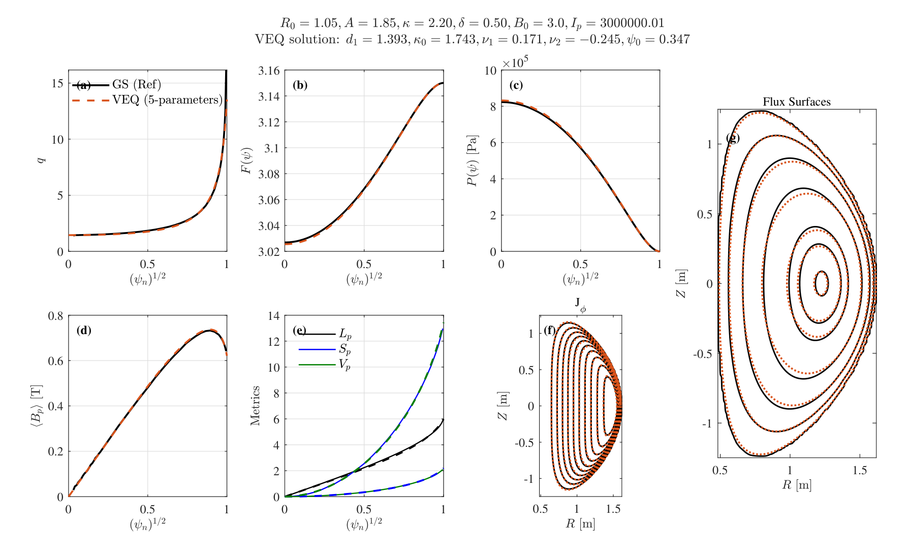
来源：2601.02942v1.pdf · PDF p.8 · 原编号 Figure 3。点击图片查看原分辨率。
(a) 安全因子 ；(b) 环向场函数 ；(c) 压力，单位帕；(d) 平均极向磁场，单位特斯拉；这些剖面的横轴为 。(e) 极向弧长、面积、体积等整体几何量共用一张坐标图，单位分别属于长度、面积、体积，不能直接比较三条曲线幅值的物理大小。(f) 环向电流分布等值线；(g) 磁面几何，位置单位米。
整体剖面相近，磁面仍有可见偏移。作者报告大部分测试的差异低于百分之五、典型求解耗时低于 50 ms；本页并没有给出完整样本数、逐指标统计、误差范数或与后文相同的严格计时协议。图支持低阶模型用于整体估计，不能证明边缘曲率、局部电流或稳定性指标也在同样误差范围内。[A：§4.1，PDF pp.7–8]
A 图 4 · 标准 D 形的高保真逆向表示
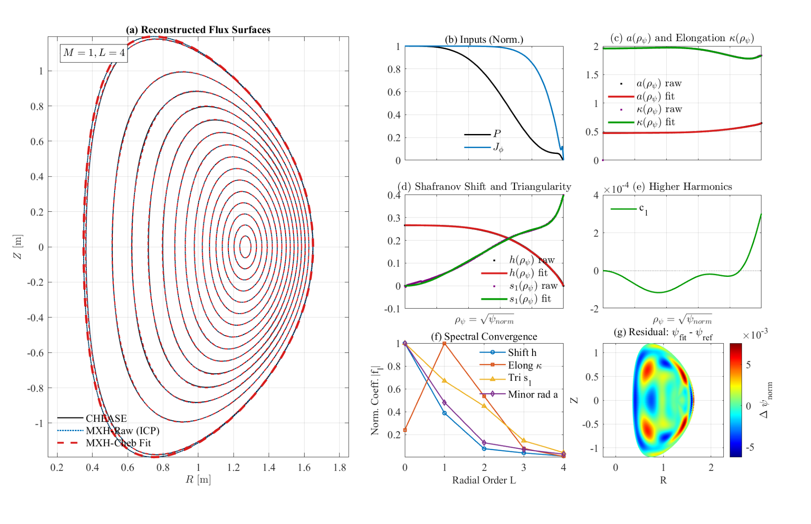
来源：2601.02942v1.pdf · PDF p.9 · 原编号 Figure 4。点击图片查看原分辨率。
(a) 二维磁面叠加；(b) 归一化压力与环向电流输入；(c) 有效小半径与伸长比；(d) 水平位移和 ；(e) 极小的余弦谐波 ；(f) 各剖面归一化系数随径向阶数衰减；(g) 的磁通重建差，不是 GS 残差。几何轴单位米，剖面横轴为 。
这组图说明规则 D 形的主要信息集中在少量低阶系数。正文给出约 13–16 个参数、、 的代表结果，摘要和结论使用更宽的 13–20 或 15–20 范围。不能把所有剖面都按相同最高阶展开后简单套用这一参数数目；论文未给出与 B 表 4–5 一样细的逐族计数。[A：PDF pp.8–9]
图 (f) 是系数谱，不是完整参数扫描的误差曲线；图 (g) 的局部差异也不是“逐点力平衡已通过”。
A 图 5 · 复杂不对称构型的拟合
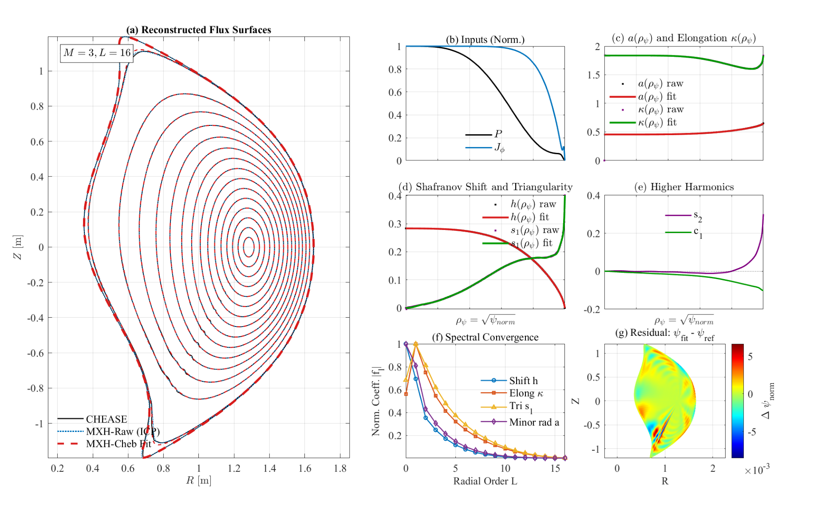
来源：2601.02942v1.pdf · PDF p.10 · 原编号 Figure 5。点击图片查看原分辨率。
面板安排与图 4 相同：(a) 磁面；(b) 输入压力/电流；(c) 小半径和伸长；(d) 位移/三角形变；(e) 更高谐波；(f) 系数谱；(g) 磁通差。图注把 Higher Harmonics 写成 (g)，但原图实际标为 (e)，这里以图内标签为准。
高阶谐波在边缘变大，说明只保留最基本 Miller 形状不足；图中 ，正文称典型约 85 个参数。磁通差在尖角/边缘更明显，作者称整体重建误差约 附近饱和，即使单独 LCFS 拟合更小。
作者将部分差异归因于 CHEASE 数据振荡及轴处剖面不满足其奇偶约束，并解释为物理滤波。该归因缺少网格加密、独立解析基准和算子残差分解，尚不能确认每一处差异都是参考解误差。原图的强形变与尖端也不足以证明严格单零分离面结构已被正确解析。[A：PDF pp.9–10，§4.2.3–4.3]
证据强度的合理表述
本文有说服力地展示了某些常见磁面族能被紧凑表示。但“通常 5–20 参数足够”“对精细稳定性分析已足够”“无损压缩”等措辞比展示的证据更强：磁通误差不等价于其二阶导数误差，有限误差内近似也不是真正信息无损。没有提供稳定性求解器耦合实验、严格最小性证明、跨大量平衡的分布统计或同误差条件下 Fourier–MXH 的完整计时对照。[A：§5–6，PDF pp.10–11；本段为阅读者评价]
论文 B：从变分原理到可执行残差
1. 几何表示的继承与变化
B 固定小半径尺度 ，水平/竖直位移改为无量纲，且极向角按顺时针计，所以竖直项带负号。B 式 (3)–(13) 的核心形式为：
正弦族有同样结构； 的边界修正为零， 加上固定边界值。B 默认 、；p.4 提及前序 arXiv 使用的截顶指数 仍可选但本次未用。这个前序描述并未在上传 A 的主要公式中清楚展开，复现时应核对文章快照，不能自行拼接两文设置。
B 图 1 · 几何与形状族
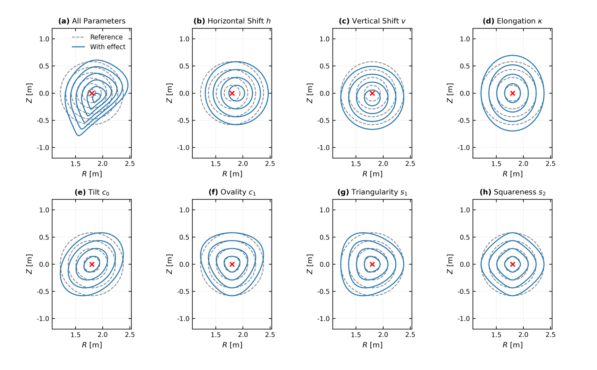
来源：2606.11821v1.pdf · PDF p.5 · 原编号 Figure 1。点击图片查看原分辨率。
(a) 多参数共同作用；(b) 水平移动 ；(c) 竖直移动 ；(d) 伸长 ；(e) 倾斜 ；(f) 卵形 ；(g) 三角形变 ；(h) 方形度 。所有面板坐标为 ，单位米，红叉标示参考中心。
它解释有限参数如何改变整族磁面，为后面的“参数诱导测试函数”提供直观基础。此图是形变示意，不是逐点平衡验证；边界是否保持固定取决于改变的是边界值还是内部修正，不能把任意图示变化当作求解中允许的边界位移。
2. 度量、可接受域与残差密度
单调磁通和正雅可比是必须监测的约束；轴处雅可比的极坐标式退化要用正则极限处理，不能直接除零。B 拒绝非单调或度量无效的状态。A 与 B 的雅可比写法相反，和竖直项/角度方向配套，不能独立替换。[B：式 (14)–(21)，PDF pp.5–6]
从 B 式 (22)–(25) 的泛函出发，在固定边界下积分分部：
是坐标变换后自然出现的残差密度； 是柱坐标标准 GS 残差。 不是任意人为权重。连续精确解使二者均为零；有限维近似的范数和测试空间则可能对这个因子敏感。[B：式 (26)–(31)，PDF pp.6–7]
3. 磁面运动诱导测试方向
改变几何参数 时，不仅函数值变化，磁面也移动。B 的核心推导显式保留对流变分：
切向位移只重新标记磁面，法向诱导变化才提供形状平衡条件。将全部形状测试与路线相关的剖面矩测试合并，得到前面的 。这不是残差平方和最小化的正规方程。[B：式 (32)–(42)，PDF pp.7–9]
当归一化磁通或环向场是活动剖面时，B 用同类径向展开：
对应剖面系数由同一残差密度的矩条件闭合。作者特意说明：对 的这些矩条件不是把 当作独立场对 MHD 泛函自由变分所得的方程。这是有限维路线闭合的设计，不能把整个残差系统都笼统称为纯能量最小化。[B：式 (38)–(41)，PDF p.8]
论文 B：六种输入路线与附录 A 闭合
所有路线都必须给出压力梯度信息，并把其余输入转换为同一组源量。表 1 的“恢复”是在依赖当前几何的残差调用中完成，不意味着一次预处理后就固定不变。
| 路线 | 直接提供的物理信息 | 需恢复的量 |
|---|---|---|
| PF | ||
| PP | ||
| PI | ||
| PJ1 | ||
| PJ2 | ||
| PQ |
共同归一化与几何因子
分离源强和磁通尺度；帽号作用于整个 ，不只作用于 。 决定截面积权重， 决定体积权重。这里的 是面积权重磁面平均电流； 采用论文式 (55) 的定义，不可直接替换成任意约定的局部平行电流密度。[B：PDF pp.10–11]
逐路线的计算逻辑
附录 A 的起点是磁面平均平衡：
- PF：若输入为径向导数源，积分后通过平方根恢复磁通梯度形状；若源表以归一化磁通为横轴，则在当前 上重新插值源，再积分恢复形状。将恢复出的 按 归一化，移出的幅度进入尺度关系。对活动磁通剖面，闭合与形状一同求解，并非另做独立固定点迭代。[B：PDF pp.26–27]
- PP：磁通梯度已给定，将共同平均平衡重新排列得到缺失的环向场源，保留 的尺度因子。[B：PDF p.27]
- PI：先由包围电流和 求磁通梯度，再对电流径向求导恢复环向场源；因此输入电流噪声可能经微分放大，论文的一致性实验未测试此问题。[B：式 (A.6)–(A.7)]
- PJ1：先计算 ，再走 PI 闭合。面积权重是这条路线的组成部分。[B：PDF pp.27–28]
- PJ2：采用活动 系数，通过下面的几何加权积分恢复电流，再恢复磁通梯度和场源；这条链依赖几何与场函数，间接程度更高。[B：PDF p.28]
- PQ：利用 ，把平均平衡转成 的一阶闭合关系；径向压力导数输入时可使用 ，边界条件为 ，最后恢复 。附录对不同源坐标的尺度吸收有专门约定，不能把无量纲公式直接当物理单位公式。[B：式 (A.3)–(A.5)]
上式是 PJ2 的原文闭合。总电流约束和环向 beta 约束通过 、 固定允许的尺度组合；并非每条路线都允许任意约束搭配。物理电流、磁通方向和 COCOS 符号必须同步处理。三类外部 G-EQDSK 测试只用了 PF 路线，不能将其成功泛化为其他五条路线对实验噪声同样可靠。[B：§5.1、结论]
论文 B：实现、初始化与计时边界
B 图 2 · 一次性准备与反复求解
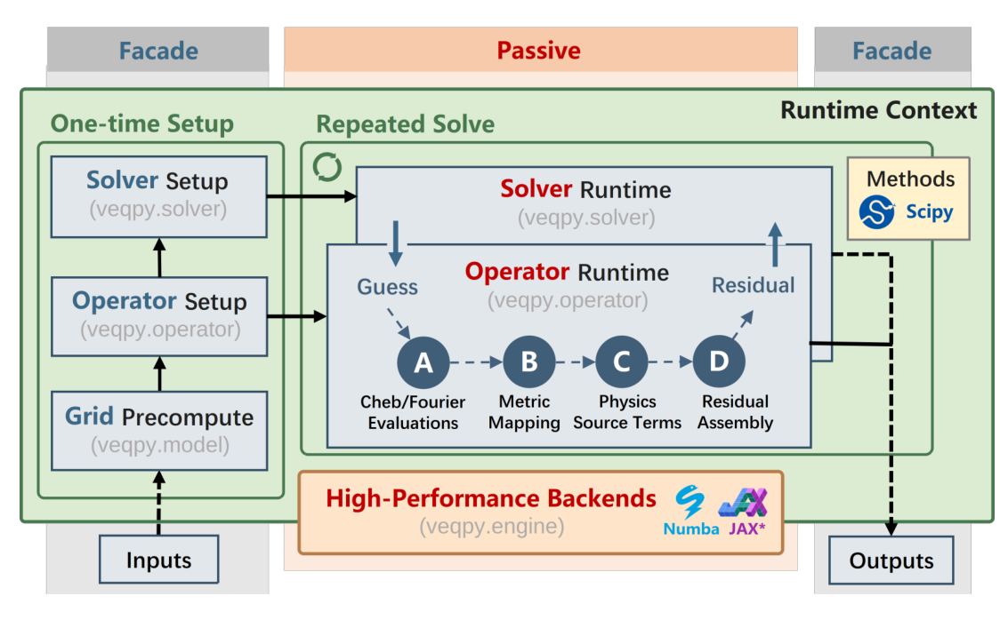
来源：2606.11821v1.pdf · PDF p.12 · 原编号 Figure 2。点击图片查看原分辨率。
左侧依次完成网格预计算、算子准备、求解器设置。中央 A 更新 Chebyshev/Fourier 剖面值；B 计算几何和度量；C 根据路线恢复物理源及尺度；D 组装残差。SciPy 非线性求解器反复送入参数并接收残差。收敛后，由参数状态重评估连续磁面与诊断。
性能来自小规模未知量与预计算复用的组合。图中的 Numba 是本次实测后端；JAX 带星号，是开发方向，图注明确它未公开发布、未参与本文计时。不能把该示意读成 GPU 或自动微分性能已验证。[B：PDF pp.11–12]
主求解把活动系数与残差块匹配成方形系统，使用 SciPy 的 Powell hybrid 方法与 Numba 加速。径向用映射到单位区间的 Gauss 积分，极向用均匀 Fourier/梯形求和。求解后导出的核心对象仍是系数向量，可在更密网格上重新评价，而不是把原求解网格插值当作唯一真值。[B：§3.2–3.3]
控制路线实验从全零系数开始；G-EQDSK 与 Pareto 实验每次用冷启动同形磁面种子，关闭暖启动。非均匀源下领先位移系数用 估计，其余族仅保留初始领先系数。冷启动求解与提前 JIT 预热并不矛盾：前者指没有复用已收敛的解，后者指编译与算子准备已经完成。[B：PDF pp.13–14]
计时机器为 Intel Core i5-14600KF、Ubuntu 24.04.4 LTS，单线程协议，记录重复求解中位数。排除文件处理、边界拟合、工作区分配、一次性算子设置、JIT、绘图和导出状态构建；高阶三例的一次性成本约从百毫秒量级到两秒。正文未给出可通用到所有调用方式的端到端延迟分布或实时最坏时间保证。
接受的代表配置投影残差范数 小于 。表中报告未做求解器块缩放的范数。活动未知量、积分节点和密集诊断节点要分别记录，不能用“只求 9 个参数”推断只计算 9 个空间点。[B：式 (64)、§5.2]
论文 B：路线一致性证明了什么
B 图 3 · 从共同 PF 平衡生成其他路线输入
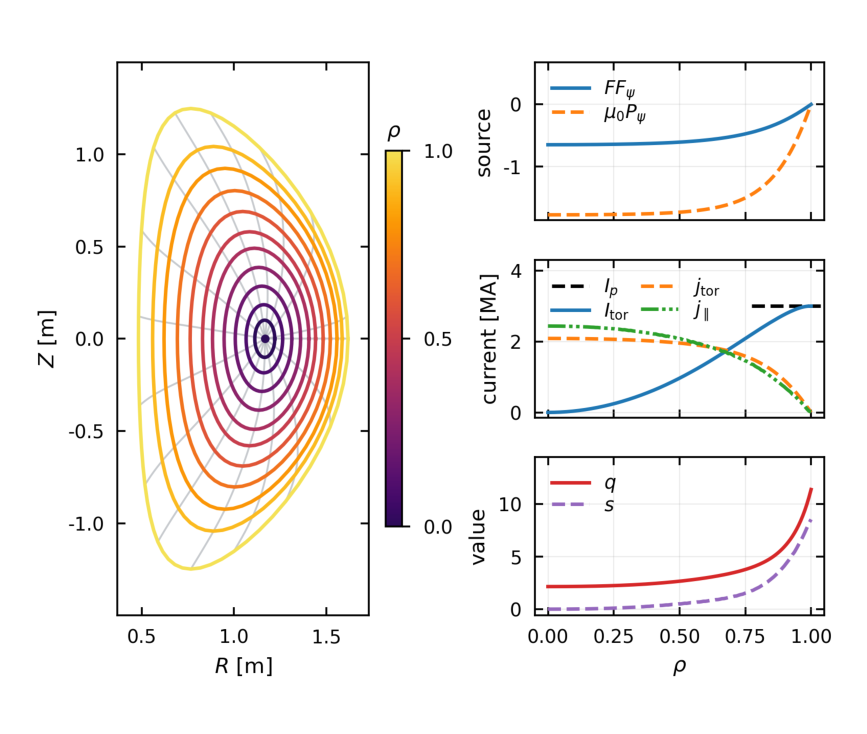
来源：2606.11821v1.pdf · PDF p.13 · 原编号 Figure 3。点击图片查看原分辨率。
左图显示 截面磁面，颜色表示径向标签；右上是环向场源与压力梯度源；右中是包围电流及电流相关剖面；右下是安全因子与磁剪切。靠近边界的 和剪切明显上升，使测试对边缘插值更敏感。
右中把电流及电流密度类量画在同一面板且统一标 current [MA]，不能把它们全都当作同单位局部电流；物理定义应以式 (52)–(55) 为准。该参考由 VEQ 自身产生，适合检验不同接口能否回到同一表示，却不是独立实验真实性验证。
B 图 4 · 积分分辨率扫描
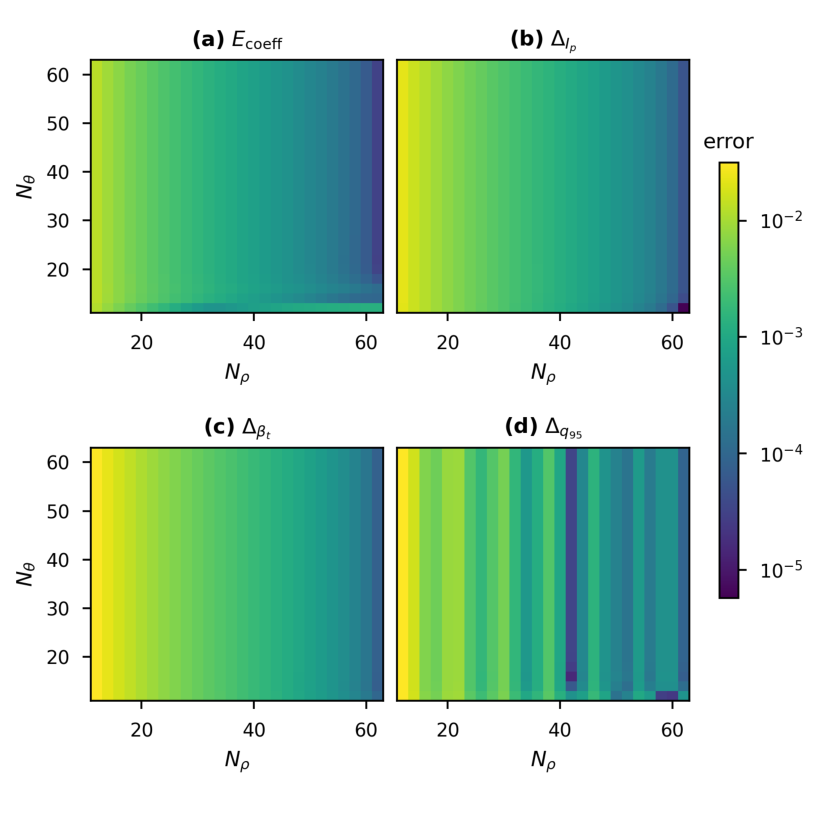
来源：2606.11821v1.pdf · PDF p.15 · 原编号 Figure 4。点击图片查看原分辨率。
横轴 ，纵轴 ；(a) 系数 RMS 差；(b) 总电流相对误差；(c) beta 相对误差；(d) 近边缘 相对误差。前三图整体向右改善、沿竖向变化较弱，说明在极向已充分分辨的范围内，径向闭合和积分是主要敏感环节。
(d) 出现不单调条带，说明边缘剖面采样与插值比体积积分更敏感。系数 RMS 没有按参考系数幅值归一化；它和其余无量纲相对误差不能直接作为同一物理精度尺度。[B：§4.3–4.4]
B 图 5 · 六路线的径向收敛
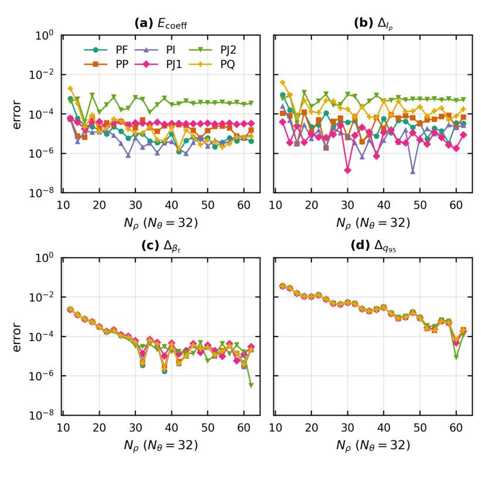
来源：2606.11821v1.pdf · PDF p.15 · 原编号 Figure 5。点击图片查看原分辨率。
(a)–(d) 仍对应系数、电流、beta 和 ；横轴径向节点数，纵轴对数误差，不同颜色/符号表示六路线。部分积分诊断随加密接近共同结果；电流与系数误差有平台和振荡，不能描述成每条曲线都严格单调收敛。
从图看 PJ2 在若干分辨率的系数与电流曲线偏高，但表 2 对应分辨率的 PJ2 数值并不完全吻合该视觉量级。报告保留表中原值，不通过读图重造数值；严格复现需核对原脚本是否使用了相同设置。共同参考、平滑相容输入的前提决定了结论范围，未测试噪声、缺测或输入相互矛盾。[B：PDF pp.15–16]
| 路线 | ||||
|---|---|---|---|---|
| PF | ||||
| PP | ||||
| PI | ||||
| PJ1 | ||||
| PJ2 | ||||
| PQ |
表中近边缘安全因子误差约为百分之零点四五，明显高于电流和 beta 的相对误差；这符合边缘采样更敏感的解释，但不能把积分约束满足得好当作所有局部量都准确。
论文 B：外部几何验证与精度–成本折中
先厘清比较对象
三类输入是 Solov’ev 解析解生成的 G-EQDSK、CHEASE 导出的 H-mode 文件和 EFIT 导出的 X-point 文件。全部采用 PF 源对归一化极向磁通的输入，以及总电流约束；beta 和安全因子只是诊断，并非额外求解约束。H-mode 与 X-point 的磁通矩形网格分别为 128×128 和 257×257。LCFS 必须先拟合成平滑 MXH 边界。[B：§5.1，PDF pp.16–17]
| 算例 | 来源/路线 | [m] | [m] | [MA] | ||
|---|---|---|---|---|---|---|
| D-shaped | Solov’ev / PF | 6.2 | 2.0 | −15.00 | 0.03 | −2.80 |
| H-mode | CHEASE / PF | 1.0 | 0.65 | 1.05 | 0.15 | 7.62 |
| X-point | EFIT / PF | 1.66 | 0.62 | 1.44 | 0.05 | 3.78 |
误差比较先对齐归一化磁通磁面和以磁轴为中心的几何极向角 ，再比较极径 。这个几何角不同于 MXH 参数角 。
通常使用 11 个磁通层条目与非退化磁面上的 16 个角度；轴条目单独取磁轴位置偏差。 对外部交换文件几何， 对高阶 VEQ 参考， 只对边界。它们单位为米，除以 后无量纲；都不是二维磁通场范数或 GS 残差。[B：式 (60)–(63)，PDF p.14]
B 图 6 · 三类高阶重建
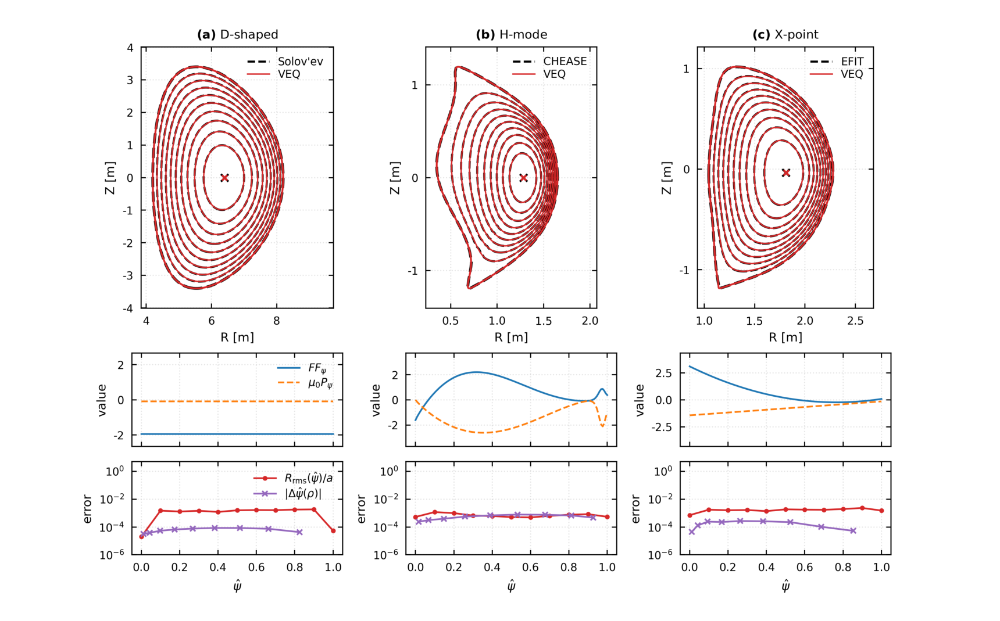
来源：2606.11821v1.pdf · PDF p.17 · 原编号 Figure 6。点击图片查看原分辨率。
上排：外部磁面黑虚线与 VEQ 红线，位置单位米；中排：输入的环向场源与压力梯度源；下排：归一化磁通映射差及按小半径归一化的逐磁面径向距离误差。中排显示 D-shaped 常源比 H-mode 的强径向结构简单，X-point 源也有自身变化。
上排重合良好与下排小几何误差相互印证。H-mode 和 X-point 的低几何误差并没有消除边缘强形式残差，必须联读图 8。X-point 在这里是平滑固定边界表示，不能从图中尖端形似 X 点推导出严格分离面处的奇异结构、开放磁力线或真空耦合已正确处理。[B：PDF pp.16–17]
| 算例 | 活动参数 | 求解中位数 [ms] | Core | Cos | Sin | ||
|---|---|---|---|---|---|---|---|
| D-shaped | 75 | 7.06 | (10,0,10,10) | — | (10,5×7) | ||
| H-mode | 130 | 116.13 | (10,10,10,10) | (10,5×7) | (10,5×7) | ||
| X-point | 130 | 22.9 | (10,10,10,10) | (10,5×7) | (10,5×7) |
Core 顺序为水平位移、竖直位移、伸长和活动磁通剖面；Cos 按角度偏移及余弦族列计数，Sin 按正弦族列计数。表中“5×7”表示五个各含七项的族，是原文计数简写。这里 H-mode、X-point 的参考解各有 130 个未知量，足见 A 的“不超过 100 个”并不是所有表示和求解定义下的通用保证。
Pareto 扫描：选过的最优配置，不是数学全局最小值
固定残差积分网格 32×32，扫描活动族和径向阶数。D-shaped、H-mode、X-point 分别测试 8022、9483、9478 个候选；H-mode 有 9184 个达到投影残差阈值，其余两类全部达到。被选的前沿与代表点均达阈值。扫描经过剪枝，前沿只对所测配置和计时协议有效。[B：§5.2]
B 图 7 · 几何精度、耗时和参数数目的折中
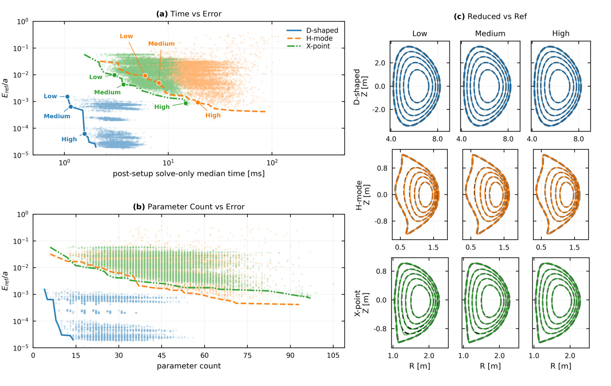
来源：2606.11821v1.pdf · PDF p.19 · 原编号 Figure 7。点击图片查看原分辨率。
(a) 横轴预热后求解中位数，单位毫秒；纵轴 ，双对数展示。散点是候选，线是经验非支配前沿。(b) 横轴参数数目，纵轴同一误差，显示相同参数数目可能因分配给不同族而表现不同。(c) 三行算例与三列选定等级的磁面，与高阶参考叠加。
D 形的少量参数即能保留高阶参考几何，H-mode 与 X-point 需要更多自由度。但高阶参考本身仍与 G-EQDSK 有差异， 的小值不能直接读成外部真值精度；参数更多也不保证每一次非线性求解更快或局部残差更小。
| 算例/等级 | 参数 | 时间 [ms] | Core | Cos | Sin | ||
|---|---|---|---|---|---|---|---|
| D / Low | 4 | 1.07 | (1,0,1,1) | — | (1) | ||
| D / Medium | 5 | 1.15 | (1,0,2,1) | — | (1) | ||
| D / High | 9 | 1.56 | (2,0,2,3) | — | (2) | ||
| H / Low | 27 | 5.97 | (6,1,4,5) | (4,1,1) | (3,1,1) | ||
| H / Medium | 40 | 8.14 | (7,1,10,2) | (5,2,2,1) | (5,2,2,1) | ||
| H / High | 65 | 19.31 | (7,7,6,8) | (6,4,3,2,2,1) | (6,5,3,2,2,1) | ||
| X / Low | 20 | 3.03 | (5,2,3,4) | (2,1) | (2,1) | ||
| X / Medium | 29 | 3.71 | (4,4,4,3) | (2,2,2,1) | (2,2,2,1) | ||
| X / High | 94 | 14.73 | (8,7,9,7) | (9,5,5,5,4,2,1) | (9,5,5,5,5,2,1) |
最准确的三个选定降阶点即论文摘要的 9、65、94 参数和约 1.6、19、15 ms。它们是相应误差约束下的代表点；不应只摘录最快时间而丢掉配置、比较参考和初始化条件。
论文 B：投影收敛后的逐点力平衡盲区
有限测试空间的正交补通常非空。活动未知量比采样点少时，主求解可以做到投影接近机器小量，而空间残差仍有结构。更重要的是边界修正含有 ，使形状测试方向在 LCFS 趋于零，边缘残差对这些测试方向较不敏感。[B：§2.5、§5.3、附录 B]
B 图 8 · 强形式残差的空间分布
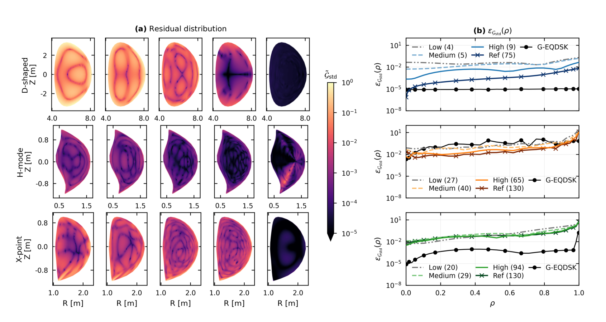
来源：2606.11821v1.pdf · PDF p.20 · 原编号 Figure 8。点击图片查看原分辨率。
(a) 三行依次为 D、H、X；五列按图注为 Low、Medium、High、Ref、G-EQDSK。颜色展示 除以各算例所有展示样本中的最大值。同一行可比较，跨行颜色不能用于绝对残差大小排名。位置轴为米。(b) 各行给出未归一化的极向 RMS 随径向标签变化，纵轴对数刻度。
D 形随丰富表示明显降低内区和边缘残差；H-mode 与 X-point 高阶内区改善，但外侧迅速增大。H-mode 的高阶全域 RMS 还略高于所选 High 行，X-point 也不单调。原始交换文件的残差经过重建、差分与插值，不是 CHEASE/EFIT 原生求解器报告的残差。
这张图支持“需要把局部平衡作为独立筛查”，不能单独确定误差来自边界拟合、源插值、谱截断还是交换格式；作者没有把这些机制唯一分离。
| 算例/参数 | 全域 RMS | RMS | RMS | ||
|---|---|---|---|---|---|
| D 4 | 0.16 | 0.34 | |||
| D 5 | 0.12 | 0.27 | |||
| D 9 | 0.12 | ||||
| D 75 | 0.01 | ||||
| D G-EQDSK | — | ||||
| H 27 | 6.51 | 0.14 | 11.64 | 139.68 | |
| H 40 | 2.61 | 4.67 | 45.35 | ||
| H 65 | 2.15 | 3.84 | 41.2 | ||
| H 130 | 2.49 | 4.45 | 48.78 | ||
| H G-EQDSK | — | 0.51 | 0.43 | 0.65 | 7.28 |
| X 20 | 1.03 | 0.29 | 2.13 | 14.22 | |
| X 29 | 0.81 | 0.15 | 1.71 | 13.52 | |
| X 94 | 1.06 | 2.25 | 20.04 | ||
| X 130 | 1.14 | 2.44 | 19.78 | ||
| X G-EQDSK | — | 0.54 |
例如 H-mode 65 参数行的投影范数为 ，但全域强形式 RMS 为 2.15。这两个数单位和定义不同，不能用相除得到“误差放大率”；它们并列说明主求解的证书不覆盖所有点。表中标准残差不是百分比，按物理 GS 定义其量纲与 相同；原表没有指定普适接受阈值。 只用于诊断分区，不是台基或分离面定义。
论文 B：一维输运测试的价值与限制
下游测试固定热源和输运模型，只更换几何因子，解单位扩散率的归一化热扩散问题：
其中 ， 是任意单位的测试温度，不是已验证的实验温度预测。归一化常数由目标几何设定后保持不变；只让 VEQ 几何进入算子。[B：式 (66)，PDF pp.21–23]
B 图 9 · 几何误差经过扩散算子的传播
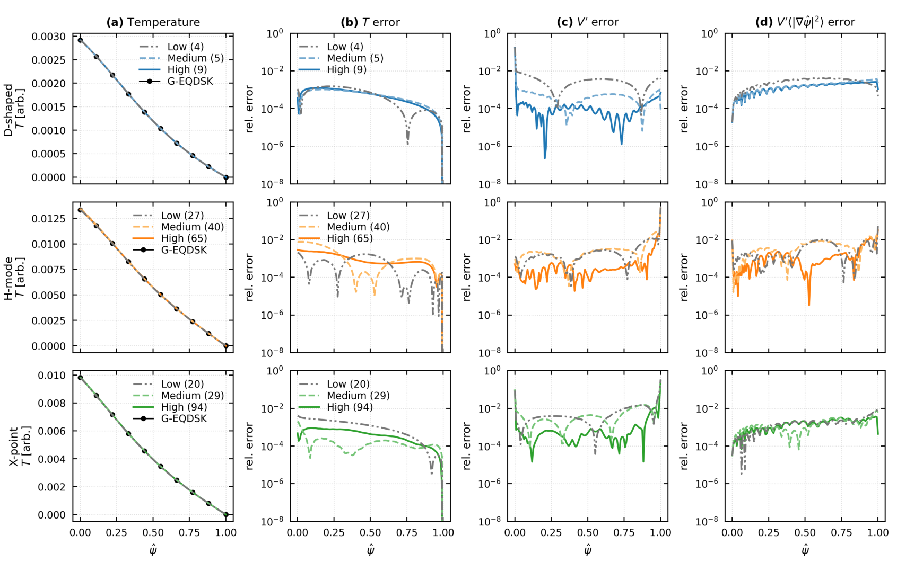
来源：2606.11821v1.pdf · PDF p.22 · 原编号 Figure 9。点击图片查看原分辨率。
三行依次为 D、H、X。(a) 测试温度剖面，任意单位；(b) 温度误差；(c) 体积导数误差；(d) 的误差。横轴为归一化极向磁通，其余误差列采用对数坐标。温度曲线接近，并不代表几何系数也在所有位置同样接近。
正文的误差定义为 ，分母是整个目标剖面的最大值，不是每一点的目标值；因此靠近零温度边界时也不是通常的逐点相对误差。扩散方程具有平滑作用是合理读者解释，但这里没有验证其他源、输运闭合或稳定性算子也同样不敏感。
| 算例 | RMS | RMS | RMS | ||
|---|---|---|---|---|---|
| D 4 | |||||
| D 5 | |||||
| D 9 | |||||
| H 27 | |||||
| H 40 | |||||
| H 65 | |||||
| X 20 | |||||
| X 29 | |||||
| X 94 |
表中温度 RMS 约为百分之 0.032–0.314，确实低于百分之一；但 beta 代理在 H-mode 40 参数行是百分之 1.26，不能写成“所有输出均低于百分之一”。 的剖面误差可达数个百分点，输出敏感性和几何误差并不一一对应，也不随阶数严格单调。本文未做温度–压力–平衡迭代反馈、实验加热反演或完整输运场景验证。
附录 B：为什么残差更小，磁面反而可能更差
从投影收敛解出发，固定相同边界、活动表示、源输入和 32×32 残差网格，用 Levenberg–Marquardt 做无锚定的配点最小二乘修正。它最小化的是标准形式残差：
这里的 Jacobian 是残差对系数的敏感性，不是坐标变换的 。它与形状变分测试矩阵 不同；标准残差还包含度量因子敏感性。因此，在有限非线性表示中，两类最优条件不等价。连续精确解当然同时满足强式和所有弱测试，但有限参数通常无法同时使所有点精确抵消。[B：式 (B.1)–(B.2)，PDF pp.29–31]
B 图 B.10 · 配点修正重新分配径向残差
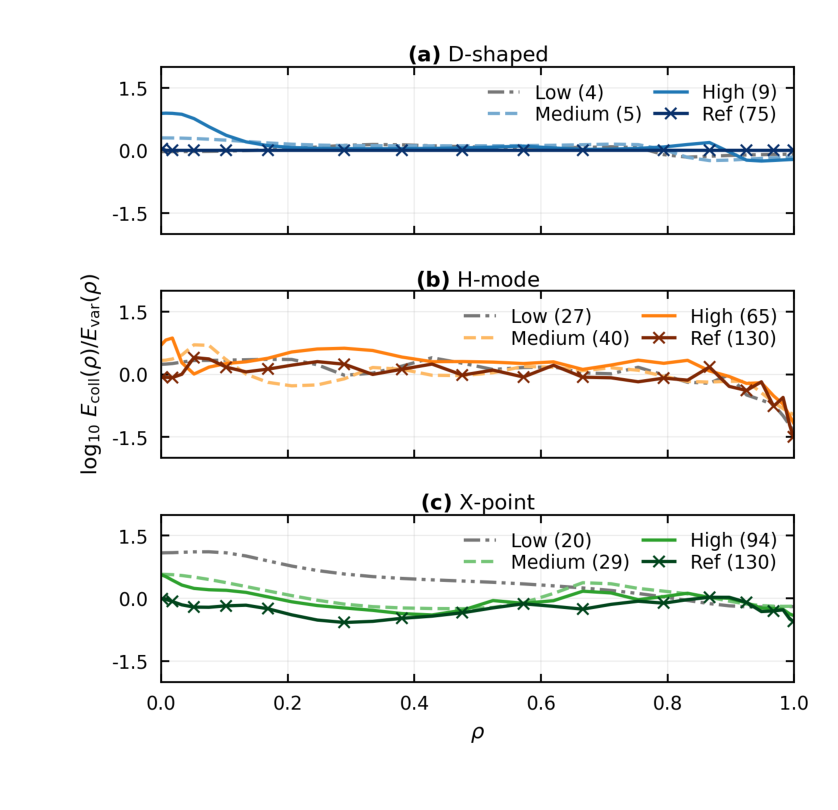
来源：2606.11821v1.pdf · PDF p.29 · 原编号 Figure B.10。点击图片查看原分辨率。
(a) D-shaped；(b) H-mode；(c) X-point。每个面板包含 Low、Medium、High、Ref；横轴径向标签，纵轴为 ，其中 是用于配点目标的带求积缩放残差之极向 RMS。零线为不变，负值配点较好，正值投影态较好。
H-mode 和 X-point 外侧常出现降低，但部分内区上升；D 形部分高阶曲线接近零。它显示残差在半径上的重新分配，不能将局部负值当成全域几何改善，也不能当作 DESC 或全部配点方法的性能排名。此处每条曲线只比较同一个 VEQ 流形中的两个状态。
| 算例 | 全域 RMS 比 | 内区 RMS 比 | 边缘 RMS 比 | 最大残差比 | 比 | 总耗时比 |
|---|---|---|---|---|---|---|
| D 4 | 0.843 | 1.026 | 0.799 | 0.744 | 1.265 | 2.674 |
| D 5 | 0.723 | 1.146 | 0.668 | 0.541 | 1.227 | 2.831 |
| D 9 | 0.65 | 1.207 | 0.597 | 0.389 | 1.043 | 3.14 |
| D 75 | 0.999 | 1.001 | 0.999 | 1.007 | 1.0 | 4.055 |
| H 27 | 0.071 | 1.415 | 0.067 | 0.026 | 3.532 | 9.87 |
| H 40 | 0.139 | 1.227 | 0.135 | 0.074 | 3.71 | 10.778 |
| H 65 | 0.109 | 1.978 | 0.105 | 0.037 | 8.549 | 8.352 |
| H 130 | 0.05 | 0.932 | 0.05 | 0.025 | 3.341 | 2.796 |
| X 20 | 0.668 | 1.045 | 0.635 | 0.647 | 4.022 | 7.725 |
| X 29 | 0.677 | 1.247 | 0.655 | 0.634 | 5.461 | 9.75 |
| X 94 | 0.433 | 1.062 | 0.428 | 0.444 | 6.438 | 16.677 |
| X 130 | 0.319 | 0.812 | 0.316 | 0.374 | 4.425 | 15.886 |
比值小于一才意味着对应指标改善。总耗时比为 ，包含已经完成的投影求解，不能当作两个独立冷启动求解器的速度比。几何比使用相同的外部 G-EQDSK 比较规则，诊断磁面从至少 128×256 连续评估网格重建。
最醒目的是 H-mode 65 参数行：全域 RMS 约降至原来的 0.109，内区却升到 1.978，几何误差升到 8.549 倍，总耗时为 8.352 倍。X-point 94 参数行也有类似折中。这个事实提示应构造面向用途的联合目标，而不是只追求一个残差数字。
一个可核验的小矛盾：附录文字称“每一行的全域 RMS 和最大残差均下降”，但 D-shaped 75 参数行最大残差比为 1.007，略高于一。应表述为“大多数行最大残差下降，该行基本不变且微增”，不照抄绝对化结论。
批判性核对：哪些结论可靠，哪些需再验证
1. A 的三角度关系存在可直接检查的笔误疑点
A 图 1 图注及 §2.2 将三角度写为 。若只有 畸变、无倾斜及其他谐波，在上顶点 代入其映射：
因此相应关系应为 ，小形变时二者近似相等。这是根据文中映射的读者推导，适用条件已给出；不将该疑点扩大为全部高阶几何参数都错误。
2. A 附录式 (A.7) 的源项导数约定不一致
A 正文明确撇号表示对 求导，但 PDF p.12 式 (A.7) 写成：
若撇号仍指磁通导数，源项多除一次 ，与正文 GS 式不一致；只有把这里的撇号改解释为径向导数，才可能用链式法则消去该因子，但原文未明确改定义。该问题已对照原 PDF 页面确认，不是文本提取造成。复现时应从所选坐标和源单位重新推导；B 区分 与 ，正好提供了更清楚的接口框架。
3. 光滑、正则与精确是三种不同保证
A 把任意光滑函数的 Chebyshev 展开描述为 minimax 最优，措辞过强：截断 Chebyshev 级数并不一般等于该函数的最佳一致逼近。快速谱收敛还依赖函数光滑性/解析性，陡峭层和尖角会改变所需阶数。基函数可微也不自动控制其高阶导数的误差。A 对轴处三角形变导数的统一零约束需要结合谐波正则性审查；B 的谐波径向幂因子说明不能仅以标量磁通函数的偶性替代所有几何正则条件。[A：§2.3、§4.3；B：§2.2；读者评价]
4. 几何、残差、物理输出须分别验收
B 在这方面比 A 严谨：几何近似、投影收敛、标准强式残差、输运输出分别报告。仍未解决的是：残差来自哪一环节、采样网格之外是否有更强局部峰值、不同输入路线对噪声的鲁棒性，以及边缘稳定性量对误差的实际敏感度。全局 RMS 可能掩盖窄区峰值；少数磁面与角度上的形状误差也可能漏掉局部尖端问题。[B：§5–6、附录 B]
5. 比较公平性与数据质量
A 的跨方法效率叙述没有同输入、同精度的充分实验支撑。B 则明确其不是跨代码排名。G-EQDSK 是交换格式，导出网格、磁面提取、符号转换、插值、边界拟合、求导都会进入误差预算；不能把外部文件的诊断残差直接归罪于原始求解器，也不能因拟合更光滑就断定它更真实。B 的表 6 与附录对照可证明不同目标的折中，不能唯一识别哪一误差机制占主导。
6. 容易误读的细节清单
- A 图 5 Higher Harmonics 的图注面板号与图内标签不一致；采用图内 (e)。
- B 图 5 与表 2 的若干路线量级需要原始脚本进一步对照，不把图线视觉值作为精确数值。
- B 表 B.8 的高阶 D 形最大残差有微增，不能写“每行都降”。
- B 输运误差使用目标全剖面最大值作分母；beta 是代理量，而非实验验证。
- B 未设标准强式残差的通用阈值；阈值应由下游用途和独立参照决定。
可借鉴的做法：如何迁移，而不是只列优点
| 借鉴对象 | 适用任务与有效原因 | 实施步骤与前提 | 成本与失败条件 |
|---|---|---|---|
| 有物理含义的紧凑表示 | 数据库压缩、参数扫描、代理模型输出；把常见形变直接编码进坐标 | 先确认是嵌套、轴对称、可表示的磁面；锁定坐标和边界约定；逐磁面拟合再拟合径向系数；同时保留几何与物理诊断 | 需要拟合与数据转换；自由边界、拓扑变化、尖锐分离面可能超出单一全局表示。参数少不保证训练样本需求一定下降 |
| ICP 重新建立点对应 | 不同代码或不同角度定义的磁面比较；减少参数化差异伪装成几何误差 | 先统一磁通标签和中心；用最近点对应优化几何；在独立角度/距离度量上验收 | 多次几何优化；可能陷入局部极小；仅最小距离小不能保证切向、曲率和磁通标记正确 |
| 准备阶段与残差调用分开 | 固定拓扑下多次求解；基函数表、积分矩阵和编译工作可复用 | 缓存不依赖当前状态的算子；每次更新几何依赖源闭合；明确哪些输入以活动磁通为横轴 | 拓扑/网格/边界族变更会触发新准备；过度缓存源值会在动态磁通映射下形成错误 |
| 多层验收 | 任何降阶平衡或代理模型；用多指标阻止“单一损失成功” | 分别检查投影范数、密集逐点残差、边界/内部几何、用途相关物理量；固定定义后比较 | 诊断有额外成本；参考文件也有误差，需解析基准或原生高精度状态 |
| 按活动族自适应分配自由度 | 少量参数预算下的形状与剖面重建；不同族敏感性不相同 | 从低阶解开始，按独立误差图增补某一径向/角族；保存 Pareto 候选而非只加统一阶数 | 需要候选求解；强非线性可能导致局部失败；全局高阶会把边缘改善与内区退化耦合 |
若目标是三维平衡或局部稳定性计算，可先借鉴“参数表示与诊断分离”的实验设计，而不要直接移植轴对称 MXH 假设。用户未指定具体课题，因此这些建议不预设你的研究是托卡马克、仿星器、控制还是代理建模。
后续研究：有可检验判据的五个方向
作者明确提出的方向：A 提议高阶直接求解、GPU/JAX、低维代理模型，以及对复杂几何使用更好基函数或区域分解；B 提议边界残差控制、自由边界/三维扩展、系统与输运耦合、作为高精度求解器初值。[A：§5，PDF pp.10–11；B：§6.4，PDF p.24] 以下是本报告提出的实验方案，未做新颖性检索，不声称“首次”。各数值门槛是建议的预注册判据，不是论文已证结果。
优先 1 · 把边缘误差拆开：边界拟合、源闭合还是谱截断？
原文动机：B 表 6 的边缘强式残差在增阶后仍明显。假设：一旦边界/交换数据误差主导，继续增加内部系数收益有限。最小实验：从一个可计算精确残差的 Solov’ev 基准开始，分别扫描导出网格、边界拟合阶数、源插值方法、活动内部阶数；再对 H-mode 做同类扫描，保持其他因素固定。基线：原投影解与高精度原生/解析参考。指标：内外区残差、峰值、几何误差、独立加密网格上的诊断。
成功/否定：某因素加密后误差稳定下降且对其他因素不敏感，支持其主导；若无法复现单因素效果，否定简单单因果解释，转向交互分析。资源：普通工作站、原始数据和可复现实验脚本，中等工作量；风险是交换数据并非独立真值，因此第一阶段必须有解析基准。
优先 2 · 带几何约束的残差修正
原文动机：表 B.8 显示无锚定修正牺牲几何。假设：加入几何保持约束可保留部分强式残差收益。最小实验：对九个降阶代表点比较纯投影、原无锚定配点与带正则的修正：
这是报告提出的新目标，不是论文原式。几何约束可用对投影态的磁面距离；若使用外部参考，必须说明它的误差。指标：残差、几何、可接受域、耗时和输运/边缘指标。建议成功标准：至少半数 H/X 降阶点残差减少一半，同时几何误差增幅不超过百分之十，且独立密网格结论不变；否则否定该简单正则策略。资源：工作站，中等；风险是量纲缩放、正则权重依赖算例，以及局部最优。
优先 3 · 不相容、带噪声的多路线输入
原文动机：六路线只在同一平滑参考生成的相容输入上测试。假设：涉及微分的路线对高频噪声更敏感，但积分闭合也可能积累偏差。最小实验：对受控参考分别加入不同幅度、相关长度的压力、电流或安全因子扰动；设计单通道噪声与互相矛盾的双通道组，重复随机实现。基线：无噪声参考、原闭合、带明确正则的闭合。指标：收敛率、误差分布、单调性破坏率、物理量偏差及噪声传播。
成功/否定：若适度平滑在相同输入误差下提高接受率、减小独立物理误差且不产生系统偏差，则支持；若仅压低投影范数但物理偏差变大，则否定。资源：工作站与批量 CPU 求解，低至中等；风险是人工噪声不代表真实诊断协方差。
优先 4 · 面向用途自适应选择参数
原文动机：B 前沿按几何误差排序，局部残差与下游温度不一定同序。假设：按目标量敏感性分配自由度比按统一几何阈值更经济。最小实验：从同一低阶状态分别按几何、边缘安全因子/剪切、输运温度目标增阶；保留一批未用于选阶的平衡作外推检验。基线：固定低/中/高阶与原几何 Pareto 选择。指标：目标量误差、失败率、平均及高分位耗时、达到阈值所需参数数。
建议成功标准：在相同失效率和独立目标误差门槛下，中位时间降低至少百分之三十；若只在训练算例有效，则不支持泛化优势。资源：更多平衡样本和小规模扫描，中等；风险是目标量误差估计器本身失准。
优先 5 · 将 VEQ 作为高精度求解器的初值
原文动机：B 明确提出暖启动高精度求解。假设：快速近似几何可减少后续求解的端到端成本，即使其自身边缘残差未达目标。最小实验：选择匹配的轴对称固定边界问题，比较标准初值与 VEQ 转换初值；统一源、磁通/电流约定、边界、最终独立残差阈值。指标：转换时间、初值生成时间、后续迭代数、总时间、失败率和最终物理误差。
成功/否定：总耗时而非仅后续迭代时间稳定减少，且相同最终验收与失败率，才支持；若转换成本抵消收益或引入坏初值，则否定。资源：两套求解器和转换接口，中至高；风险是基函数、源约束与边界处理不兼容。若选 DESC 作对照，应先做轴对称匹配实验，再考虑三维，不把维度差异算作算法优劣。
复现入口、当前资源与阅读覆盖
B 第 26 页给出 VEQPy 代码入口，当前重定向到 FusionAlpha/veqpy，许可证为 BSD-3-Clause。当前 README 已描述额外路线、可选 C++ 后端和更新的接口/坐标命名；这些内容超出本文 v1 的实测范围，不能回填为论文已完成的结果。网页中演示与数据入口可作为后续复现线索；本次仅核对公开资源，未审计代码，也未确认公开当前树与 Zhang2026-v1 完全对应。
真正复现实验前，应取得对应提交或文章专用包，固定依赖、硬件/线程、边界系数、输入文件与插值方式、活动族计数、初始化、积分网格和诊断网格。先跑解析基准并核查符号/单位，再复现表 2、4–7、B.8；最后才比较其他后端或求解器。Python 环境应按用户偏好使用 conda 管理。
覆盖核对
- A：PDF 13 页全部检查；正文图 1–5 均渲染、嵌入并逐面板解释；附录 A 没有额外图；无编号表。
- B：PDF 33 页全部检查；正文图 1–9 和附录图 B.10 均渲染、嵌入并解释；表 1–7 与 B.8 已逐表整理，数值以原表为准。
- 未发现需要另列的实质性未编号示意图。流程图 B 图 2 已计入 15 幅图；图片对象数未作为完整性依据。
- 两篇参考文献用于定位方法来源：GS、变分矩方法、Miller/MXH、Chebyshev、COCOS 和原生求解器等；不声称已阅读全文引用链。
- 未获得文章专用匿名评审包；未进行运行复现、实验数据库外推验证或研究新颖性检索。期刊版 A 未与上传 v1 逐字比对。
完整性状态：上传两份 PDF 的阅读与图表覆盖完整；文章专用代码/数据复现未完成。这个范围区分同样适用于本报告的后续建议，所有拟议实验均未在本次执行。
原图索引
- A 图 1 · 单个 MXH 系数的形状作用 · PDF p.4
- A 图 2 · 平滑剖面与陡峭剖面的阶数需求 · PDF p.6
- A 图 3 · 五参数正向求解 · PDF p.8
- A 图 4 · 标准 D 形的高保真逆向表示 · PDF p.9
- A 图 5 · 复杂不对称构型的拟合 · PDF p.10
- B 图 1 · 几何与形状族 · PDF p.5
- B 图 2 · 一次性准备与反复求解 · PDF p.12
- B 图 3 · 从共同 PF 平衡生成其他路线输入 · PDF p.13
- B 图 4 · 积分分辨率扫描 · PDF p.15
- B 图 5 · 六路线的径向收敛 · PDF p.15
- B 图 6 · 三类高阶重建 · PDF p.17
- B 图 7 · 几何精度、耗时和参数数目的折中 · PDF p.19
- B 图 8 · 强形式残差的空间分布 · PDF p.20
- B 图 9 · 几何误差经过扩散算子的传播 · PDF p.22
- B 图 B.10 · 配点修正重新分配径向残差 · PDF p.29